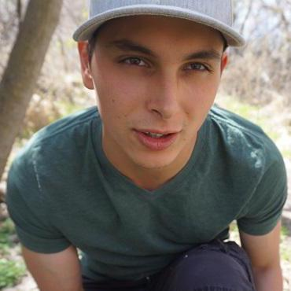

About Me

Hello, Visitors!
My name is Alexander Ulfich and I am a full-stack web developer (in training) based in Salt Lake City, Utah. I enjoy creating new and unique websites that will accommodate each individuals’ needs.
A little more about me - I enjoy being outdoors and exercising. I will actually be participating in my first Spartan Race in August! When I'm not excerising you can usually find me cooking, reading or watching Netflix (currently watching Arrow and Flash).